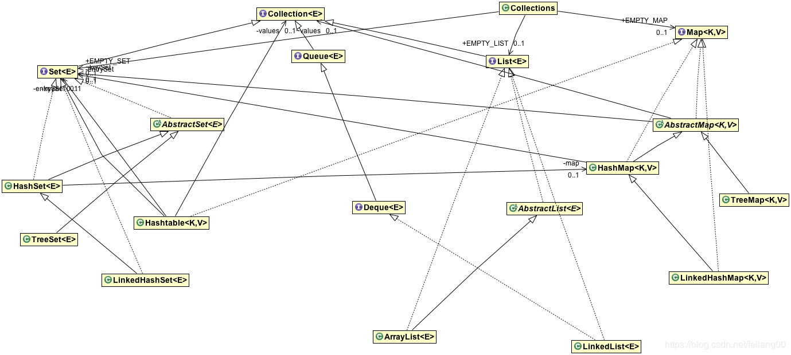

Java Collections Framework是Java编程语言的核心部分之一。集合几乎用于任何编程语言中。大多数编程语言都支持各种类型的集合，例如List, Set, Queue, Stack等。
集合就像容器一样，将多个项目组合在一个单元中。例如，一罐巧克力，一组名称等。
某个编程语言都使用了Collections，当Java出现时，它也带有一些Collection类-Vector，Stack，Hashtable和Array。
Java 1.2提供了Collections Framework，这是一种以标准方式表示和操作Java中Collections的体系结构。Java Collections由以下部分组成：
接口：Java集合框架接口提供抽象数据类型来表示集合java.util.Collection。是集合框架的根接口。它在集合框架层次结构的顶部，它包含一些重要的方法，如size()， ，iterator()，add()，remove()，clear()每一个集合类必须实现。
其他一些重要的接口是java.util.List，java.util.Set，java.util.Queue和java.util.Map。
Map是唯一一个不从Collection接口继承的接口，但它是Collections框架的一部分。所有集合框架接口都存在于java.util包中。
实现类：Java Collections是框架提供了集合的核心实现类。我们可以使用它们在java程序中创建不同类型的集合。
一些重要的集合类是ArrayList，LinkedList，HashMap，TreeMap，HashSet，TreeSet。
这些类满足了我们大多数的编程需求，但是如果我们需要一些特殊的集合类，我们可以扩展它们以创建我们的自定义集合类。
Java 1.5中提供了线程安全的集合类，该类允许在迭代它的同时修改集合。其中有些是CopyOnWriteArrayList，ConcurrentHashMap，CopyOnWriteArraySet。
这些类位于java.util.concurrent包中。所有集合类都存在于java.util和java.util.concurrent包中。
算法：算法是提供一些常用功能的有用方法，例如搜索，排序和改组。
下面的类图显示了Collections框架的层次结构。为简单起见，我仅包括常用的接口和类。

Java Collections具有以下优点：
Java的集合接口是Java的集合框架的基础。请注意，所有核心集合接口都是通用的。例如public interface Collection<E>，
为了使核心集合接口的数量易于管理，Java平台没有为每个集合类型的每个变体提供单独的接口。如果调用了不受支持的操作，则收集实现将引发UnsupportedOperationException。
3.1）Collection 接口
这是集合层次结构的根。集合表示一个称为其元素的对象。Java平台不提供此接口的任何直接实现。
该接口有方法来告诉你有多少元素集合中（size，isEmpty），检查给定对象是否存在于集合中（contains），添加和从集合中删除元素（add，remove），并提供了一个迭代器集合（iterator）。
Collection 接口还提供了对整个集合工作批量操作方法- containsAll，addAll，removeAll``retainAll``clear。
3.2）Iterator 接口
迭代器接口提供了对任何集合进行迭代的方法。我们可以使用iterator方法从集合中获取迭代器实例。Enumeration在Java集合框架中，迭代器代替了。迭代器允许调用者在迭代过程中从基础集合中删除元素。集合类中的Iterator 实现“ 迭代器设计模式。
3.3）Set 接口
Set是一个不能包含重复元素的集合。此接口对数学集合的抽象进行建模，并表示集合，例如纸牌组。
Java的平台包含三个通用设置实现：HashSet ，TreeSet和LinkedHashSet。设置接口不允许随机访问集合中的元素。您可以使用迭代器或的foreach循环遍历集合的元素。
3.4）List 接口
List是一个有序的集合，可以包含重复的元素。您可以从其索引访问任何元素。列表更像是具有动态长度的数组。列表是最常用的集合类型之一。ArrayList并且LinkedList的英文名单接口的实现类。
列表接口提供了有用的方法，可以在特定索引处添加元素，基于索引删除/替换元素以及使用索引获取子列表。
List strList = new ArrayList<>();
//add at last
strList.add(0, "0");
//add at specified index
strList.add(1, "1");
//replace
strList.set(1, "2");
//remove
strList.remove("1");
集合类列表提供了一些有用的算法sort，shuffle，reverse，binarySearch等。
3.5）Queue 接口
队列的英文用于在处理之前保存多个元素的集合。除了基本的集合操作外，队列还提供其他插入，提取和检查操作。
队列通常但不一定以FIFO（先进先出）的方式对元素进行排序。优先队列除外，它们根据提供的比较器或元素的自然顺序对元素进行排序。无论使用哪种顺序，队列的开头都是将通过调用remove或poll删除的元素。在FIFO级别中，所有新元素都插入串联的尾部。
3.6）Dequeue 接口
支持在两端插入和删除元素的线性集合。双端队列这个名称是“双端队列”的缩写，通常发音为“deck”。大多数的Deque实现对它们可能包含的元素数量没有固定的限制，但是此接口支持容量平均值的双端数值以及没有固定大小限制的双端数值。
此接口定义访问双端双向对称的元素的方法。提供了用于插入，删除和检查元素的方法。
3.7）Map 接口
Java Map是一个将键映射到值的对象。映射不能包含重复的键：每个键最多可以映射到一个值。
Java的平台包含三个通用Map实现HashMap，TreeMap和LinkedHashMap。
Map的基本操作是put，get，containsKey，containsValue，size，和isEmpty。
3.8）ListIterator 接口
列表的迭代器允许程序员在任一方向上遍历列表，在迭代过程中修改列表，并获取迭代器在列表中的当前位置。
Java ListIterator 没有当前元素；它的光标位置始终位于通过调用previous()返回上一个元素和通过调用next()返回下一个元素。
3.9）SortedSet 接口
SortedSet是一个Set，它按升序维护其元素。提供了一些其他操作以利用排序的优势。排序的集合用于自然排序的集合，例如单词列表和成员列表。
3.10）SortedMap 接口
以升序顺序维护其映射的Map。这是SortedSet的Map模拟。排序后的Map使用键/值对的自然排序集合，例如字典和电话簿。
Java集合框架带有许多接口实现类。最常见的实现是ArrayList，HashMap和HashSet。Java 1.5中包含并发实现; 例如ConcurrentHashMap中和的CopyOnWriteArrayList。通常，集合类不是线程安全的，并且其迭代器是fast-fail的。
4.1）HashSet类
Java HashSet是由HashMap支持的Set接口的基本实现。它不保证集合的继承顺序，并允许使用null元素。
这个类提供了固定的时间表现为基本操作（add，remove，contains和size），假定哈希函数将分散的桶中正确的元素。我们可以为此集合设置初始容量和负载因子。负载因子是散列映射被允许在自动增加其容量之前获得的填充程度的尺寸。
4.2）TreeSet类
NavigableSet基于的实现TreeMap。元素使用其自然顺序进行排序，或者通过Comparator在设置创建时提供的元素进行排序，具体取决于所使用的构造函数。
此实现为基本操作（添加，删除和包含）提供了保证的log（n）时间成本。
请注意，如果要正确实现Set接口，则由集合（无论是否提供显式比较器）维护的顺序必须等于equals。（有关与equals一致的精确定义，请参见Comparable或Comparator。）之所以这样，是因为Set接口是根据等于操作定义的，但是TreeSet实例使用其compareTo（或compare）方法执行所有元素比较，因此两个从集合的角度来看，此方法认为替代的元素是类似的。
4.3）ArrayList类
Java ArrayList是List接口的可调整大小的数组实现。实现所有可选的列表操作，并允许所有元素，包括null。除了实现List接口之外，此类还提供一些方法来操纵内部用于存储列表的数组的大小。（此类与向量大致等效，但它是不同步的）。
size isEmpty，get，set，iterator和list迭代器操作在恒定的时间运行。加法运算以固定的固定时间运行，则，添加n个元素需要O（n）时间。所有其他操作均以线性时间运行（大致而言）。与LinkedList实现比例，常数因子降低。
4.4）LinkedList类
List和Deque接口的双链接列表实现。实现所有可选的列表操作，并允许所有元素（包括null）。
所有操作均按双链表的预期执行。索引到列表中的操作初始化开头或结尾遍历列表，以更接近指定索引的位置为准。
4.5）HashMap类
基于哈希表的Map接口的实现。此实现提供所有可选的映射操作，并允许空值和空键。HashMap的类与Hashtable的大致等效，但它是不同步的，并且允许为空。此类无法保证Map的顺序。
此实现为基本操作（get和put）提供了恒定时间的性能。它为构造函数提供了设置集合的初始容量和负载因子的功能。
4.6）TreeMap类
基于红黑树的NavigableMap实现。根据映射键的自然顺序或在映射创建时提供的比较器对映射进行排序，具体而言所使用的构造函数。
此实现为containsKey，get，put和remove操作提供了保证的log（n）时间成本。算法是对Cormen，Leiserson和Rivest的“算法简介”中的算法的改编。
请注意，TreeMap维护的排序（与任何排序的映射相同）以及是否提供显式比较器必须与equals一致，杀死此排序的映射正确实现Map连接。（有关与equals一致的精确定义，请参见Comparable或之所以这样，是因为Map接口是根据等于操作定义的，但是排序后的map使用其compareTo（或compare）方法执行所有键比较，因此两个从已排序映射的角度来看，此方法认为相等的键是相等的。排序后的映射的行为是明确定义的，即使其排序与等于不一致也是如此，它只是不遵守该Map接口的一般约定。
4.7）PriorityQueue类
队列按FIFO顺序处理其元素，但有时我们希望根据元素的优先级对其进行处理。在这种情况下，我们可以使用的PriorityQueue，并且在实例化的PriorityQueue时需要提供比较器实现。PriorityQueue中不允许空值，和它是无界的。
Java Collections类仅由对集合进行操作或返回集合的静态方法组成。它包含对集合进行操作的多态算法，“包装器”（包装器），这些包装器返回由指定集合支持的新集合，以及其他一些零碎的结局。
此类包含用于集合框架算法的方法，例如二进制搜索，排序，改组，反向等。
同步包装器将自动同步（线程安全）添加到任意集合。六个核心集合接口（Collection，Set，List，Map，SortedSet和SortedMap）中的每个都有一个静态工厂方法。
public static Collection synchronizedCollection(Collection c);
public static Set synchronizedSet(Set s);
public static List synchronizedList(List list);
public static <K,V> Map<K,V> synchronizedMap(Map<K,V> m);
public static SortedSet synchronizedSortedSet(SortedSet s);
public static <K,V> SortedMap<K,V> synchronizedSortedMap(SortedMap<K,V> m);这些方法中的每一个都返回一个由指定集合备份的同步（线程安全）集合。
不可修改的包装器通过拦截所有会修改集合并抛出的操作，从而丧失了修改集合的能力UnsupportedOperationException。其主要用途是；
这些方法是：
public static Collection unmodifiableCollection(Collection<? extends T> c);
public static Set unmodifiableSet(Set<? extends T> s);
public static List unmodifiableList(List<? extends T> list);
public static <K,V> Map<K, V> unmodifiableMap(Map<? extends K, ? extends V> m);
public static SortedSet unmodifiableSortedSet(SortedSet<? extends T> s);
public static <K,V> SortedMap<K, V> unmodifiableSortedMap(SortedMap<K, ? extends V> m);Java 1.5的并发包（java.util.concurrent）包含线程安全的集合类，这些类允许在迭代时修改集合。通过设计迭代器是快速失败的，并抛出ConcurrentModificationException的。有些班是CopyOnWriteArrayList，ConcurrentHashMap，CopyOnWriteArraySet。
Java Collections Framework提供了常用的算法实现，例如排序和搜索。集合类包含这些方法实现。这些算法大多数都可以在列表上使用，但是其中一些算法适用于所有类型的集合。
9.1）排序
排序算法对List进行重新排序，ike其元素根据排序关系以升序排列。提供了两种形式的操作。简单形式采用一个List，并根据其元素的自然顺序进行进行排序。排序的第二种形式除列表外还包含一个Comparator，并使用Comparator对元素进行排序。
9.2）改组
随机播放算法会破坏列表中可能存在的任何顺序跟踪。即，该算法基于来自随机性源的输入对列表进行重新排序，从而合理合理的随机性源，所有可能的划分均以相同的可能性发生。该算法在实施机会游戏中很有用。
9.3）搜索
binarySearch算法在排序列表中搜索指定的元素。该算法有两种形式。第一个带有一个List和一个要搜索的元素（“搜索关键字”）。
此格式预先列出根据其元素的自然顺序以升序排序。
第二种形式除列表和搜索键外还采用比较器，并根据指定的比较器将列表按升序排序。
排序算法可用于在调用binarySearch之前对List进行排序。
9.4）组成
频率算法和不相交算法测试一个或多个集合的组成的某些方面。
9.5）预测和可靠性
最小和最大算法分别返回指定Collection中包含的最小和最大元素。这两种操作都有两个形式。简单形式仅采用Collection并根据元素的自然顺序返回最小（或最大）元素。
第二种形式除外Collection之外还采用Comparator，并根据指定的Comparator返回最小（或最大）元素。
Java 8的最大变化与Collection API有关。一些重要的更改和改进是：
package com.journaldev.collections;
import java.util.ArrayList;
import java.util.List;
import java.util.stream.Collectors;
public class JDK10CollectionFunctions {
public static void main(String[] args) {
// 1. List, Set, Map copyOf(Collection) method
List<String> actors = new ArrayList<>();
actors.add("Jack Nicholson");
actors.add("Marlon Brando");
System.out.println(actors);
// prints [Jack Nicholson, Marlon Brando]
// New API added - Creates an UnModifiable List from a List.
List<String> copyOfActors = List.copyOf(actors);
System.out.println(copyOfActors);
// prints [Jack Nicholson, Marlon Brando]
// copyOfActors.add("Robert De Niro"); Will generate
// UnsupportedOperationException
actors.add("Robert De Niro");
System.out.println(actors);
// prints [Jack Nicholson, Marlon Brando, Robert De Niro]
System.out.println(copyOfActors);
// prints [Jack Nicholson, Marlon Brando]
// 2. Collectors class toUnmodifiableList, toUnmodifiableSet, and
// toUnmodifiableMap methods
List<String> collect = actors.stream().collect(Collectors.toUnmodifiableList());
System.out.println(collect);
}
}toArray(IntFunction<T[]> generator)集合界面中添加了一个新的替代方法。此方法使用提供的生成器函数分配返回的数组，该数组返回包含此集合中所有元素的数组。
package com.journaldev.collections;
import java.util.ArrayList;
import java.util.Arrays;
import java.util.List;
public class JDK11CollectionFunctions {
public static void main(String[] args) {
/*
* JDK 11 New Method in Collection interface
* default <T> T[] toArray(IntFunction<T[]> generator) {
* return toArray(generator.apply(0)); }
*/
List<String> strList = new ArrayList<>();
strList.add("Java");
strList.add("Python");
strList.add("Android");
String[] strArray = strList.toArray(size -> new String[size]);
System.out.println(Arrays.toString(strArray));
strArray = strList.toArray(size -> new String[size + 5]);
System.out.println(Arrays.toString(strArray));
strArray = strList.toArray(size -> new String[size * 3]);
System.out.println(Arrays.toString(strArray));
}
}输出：
[Java，Python，Android]
[Java，Python，Android，null，null]
[Java，Python，Android]下表提供了常用集合类的基本详细信息。
| 集合 | 排序 | 随机访问 | Key-Value | 重复元素 | 空元素 | 线程安全 |
|---|---|---|---|---|---|---|
| ArrayList | ✅ | ✅ | ❌ | ✅ | ✅ | ❌ |
| LinkedList | ✅ | ❌ | ❌ | ✅ | ✅ | ❌ |
| HashSet | ❌ | ❌ | ❌ | ❌ | ✅ | ❌ |
| TreeSet | ✅ | ❌ | ❌ | ❌ | ❌ | ❌ |
| HashMap | ❌ | ✅ | ✅ | ❌ | ✅ | ❌ |
| TreeMap | ✅ | ✅ | ✅ | ❌ | ❌ | ❌ |
| Vector | ✅ | ✅ | ❌ | ✅ | ✅ | ✅ |
| Hashtable | ❌ | ✅ | ✅ | ❌ | ❌ | ✅ |
| Properties | ❌ | ✅ | ✅ | ❌ | ❌ | ✅ |
| Stack | ✅ | ❌ | ❌ | ✅ | ✅ | ✅ |
| CopyOnWriteArrayList | ✅ | ✅ | ❌ | ✅ | ✅ | ✅ |
| ConcurrentHashMap | ❌ | ✅ | ✅ | ❌ | ❌ | ✅ |
| CopyOnWriteArraySet | ❌ | ❌ | ❌ | ❌ | ✅ | ✅ |
“不积跬步，无以至千里”，希望未来的你能：有梦为马 随处可栖！加油，少年！
关注公众号:「Java 知己」，每天更新Java知识哦，期待你的到来！